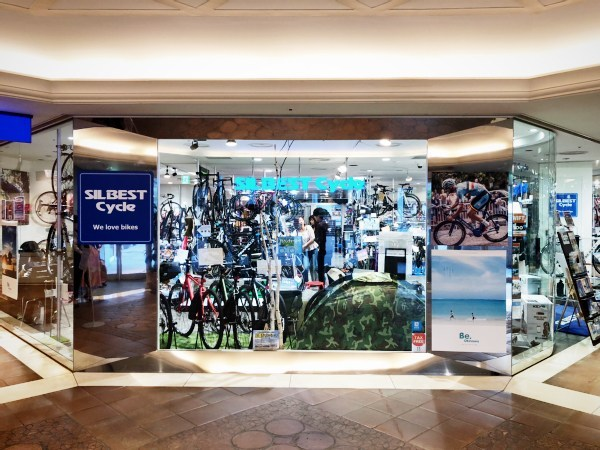

Course List

Via Cycles Village
大阪地下鉄谷町線 天神橋筋6丁目駅 徒歩2分
おそらく淀川以南の大阪の市街で最も北側に位置するのがビアサイクルビレッジ。緑色の看板と、コンテナ風の大きなテンポがオシャレです。
シルベストサイクル 梅田店

JR大阪駅 徒歩4分
店内スペースが大きく二つに分かれているのが特徴で、完成車スペースと、ウェアやメンテナンス、パーツ類が揃ったペースに分かれています。
スポーツサイクルショップベックオン

大阪地下鉄御堂筋線 本町駅 徒歩2分
クロスバイク、ロードバイクともにありますが、ロードバイクのほうがやや多め。シートやパーツ類が奥のスペースにたくさんあって、関連グッズを購入するには便利そうです。
ワイズロード・大阪本館
大阪地下鉄御堂筋線 本町駅 徒歩10分
店内はとても広く、置いている自転車も結構安い数万円のものから、数十万円するものまで。品揃えが多いせいか、型落ちモデルの特売をよくやっていますので、通ってみると良い1台に巡り会えるかもしれません。
キャノンデール心斎橋
大阪地下鉄御堂筋線 心斎橋駅 徒歩9分
キャノンデールの店内は、基本的に自社ブランドのものしか置いていないので、そんなに広くはありません。またパーツ類もコーナーはあるもののそこそこといった感じ。ただしブランドのことを熟知したスタッフの方が常にいるというのは、結構安心感があります。